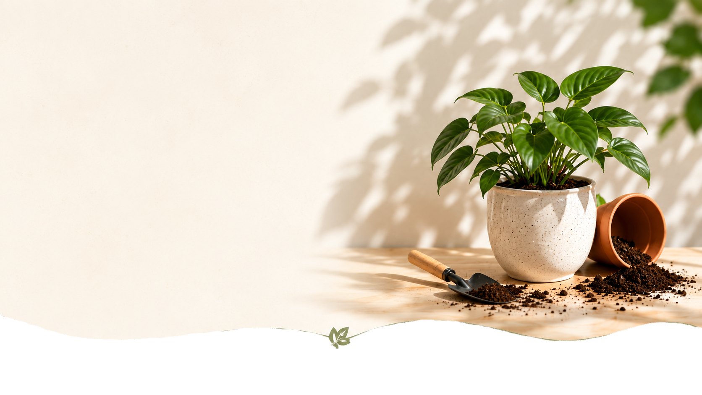
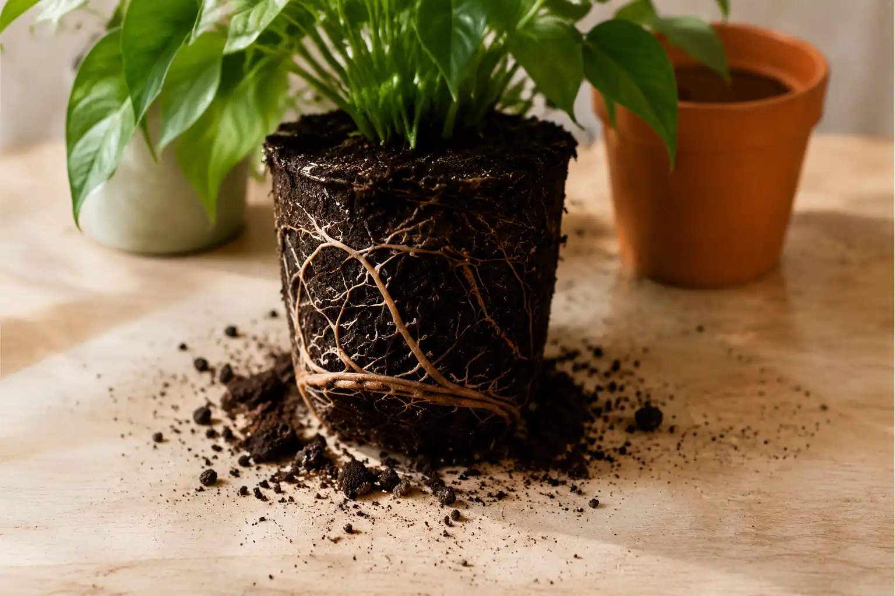
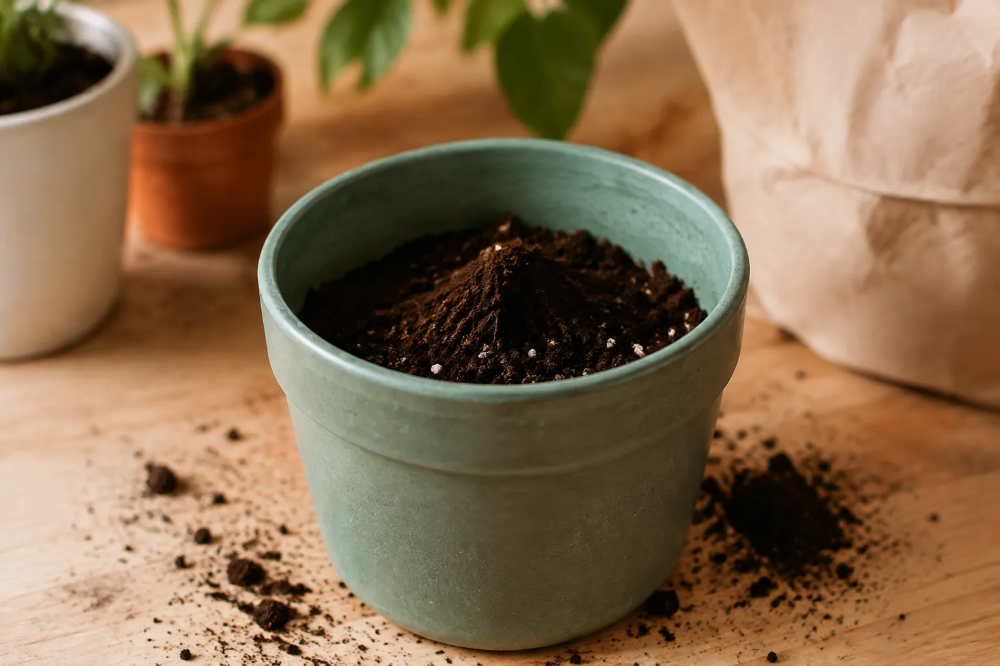
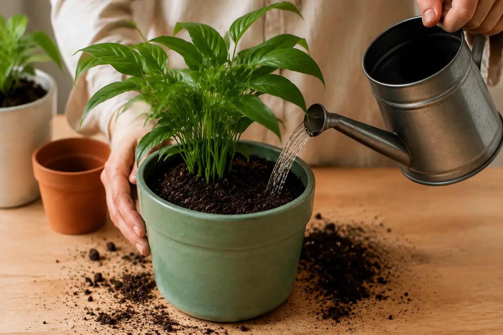
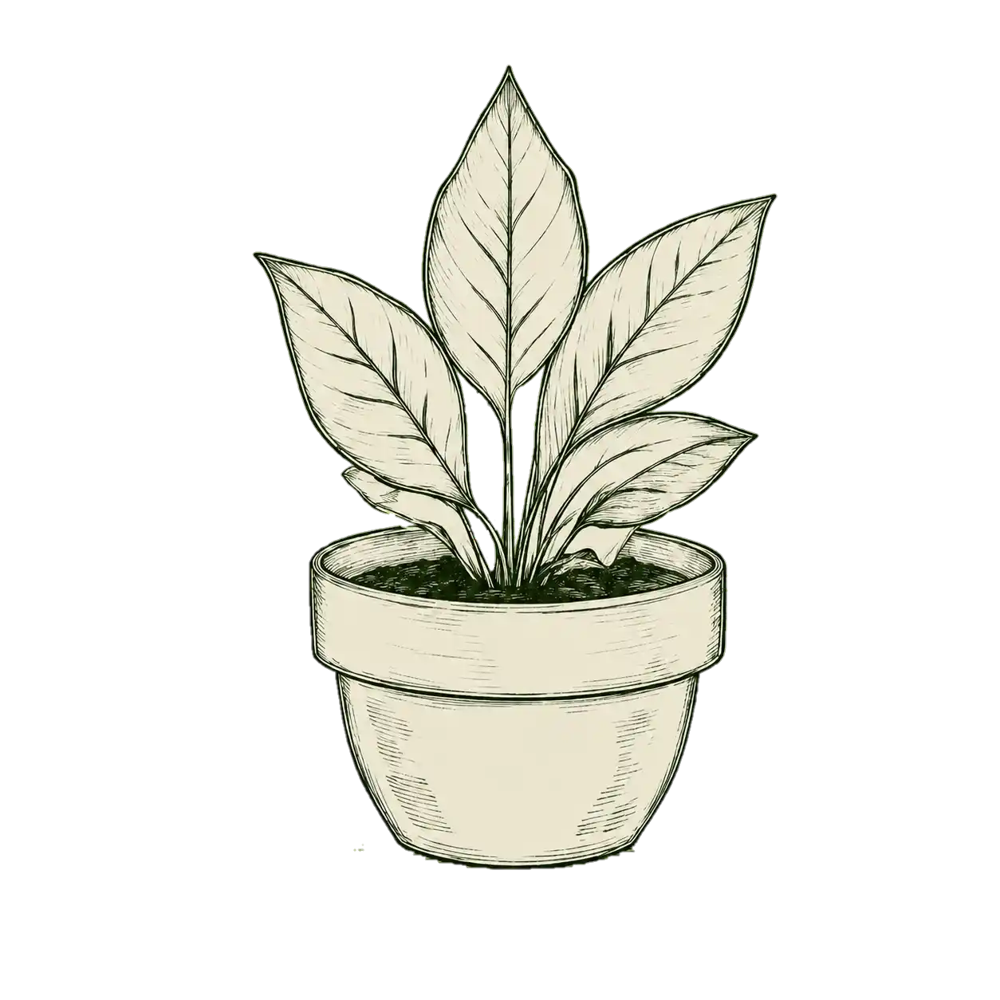
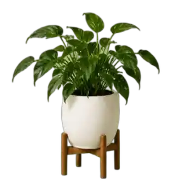

راهنمای کامل
آموزش تعویض گلدان
به روش صحیح
تعویض گلدان یکی از مهمترین کارها برای حفظ سلامت گیاهان است. با رعایت مراحل صحیح، ریشهها فضای کافی برای رشد پیدا میکنند و گیاه شما شادابتر خواهد بود.
چرا باید گلدان را تعویض کنیم؟
با گذشت زمان، ریشهها تمام فضای گلدان را پر میکنند.
خاک مواد مغذی خود را از دست میدهد و زهکشی کاهش مییابد.
این عوامل باعث کندی رشد و حتی آسیب به گیاه میشوند.
مراحل تعویض گلدان
خارج کردن گیاه از گلدان
گیاه را به آرامی از گلدان خارج کنید.
اگر ریشهها به
دیواره چسبیدهاند، با دقت و بدون آسیب جدا کنید.

بررسی ریشهها
ریشههای خشک، پوسیده یا پیچیده را با قیچی تمیز کوتاه کنید. این کار به گیاه کمک میکند رشد بهتر و سالمتری داشته باشد.
آمادهسازی گلدان جدید
گلدان جدید باید کمی بزرگتر از قبلی باشد. کف گلدان را با پوکه یا سنگریزه بپوشانید تا زهکشی بهتر انجام شود.

پر کردن گلدان با خاک مناسب
مقداری خاک مناسب گیاه را داخل گلدان بریزید و کمی فشار دهید.
قرار دادن گیاه در گلدان
گیاه را در مرکز گلدان قرار دهید و مطمئن شوید که ارتفاع آن مناسب است.
تکمیل و آبیاری
فضای اطراف ریشه را با خاک پر کنید و کمی فشار دهید. در پایان، آبیاری ملایم انجام دهید.

نکات مهم

- گلدان جدید باید ۲ تا ۳ سانتیمتر بزرگتر از قبلی باشد.
- بهترین زمان برای تعویض گلدان فصل بهار است.
- بعد از تعویض گیاه را بلافاصله کوددهی نکنید.
- نوع خاک را متناسب با نیاز گیاه انتخاب کنید.
- از قرار دادن گیاه در محیطهای خیلی گرم یا سرد خودداری کنید.
